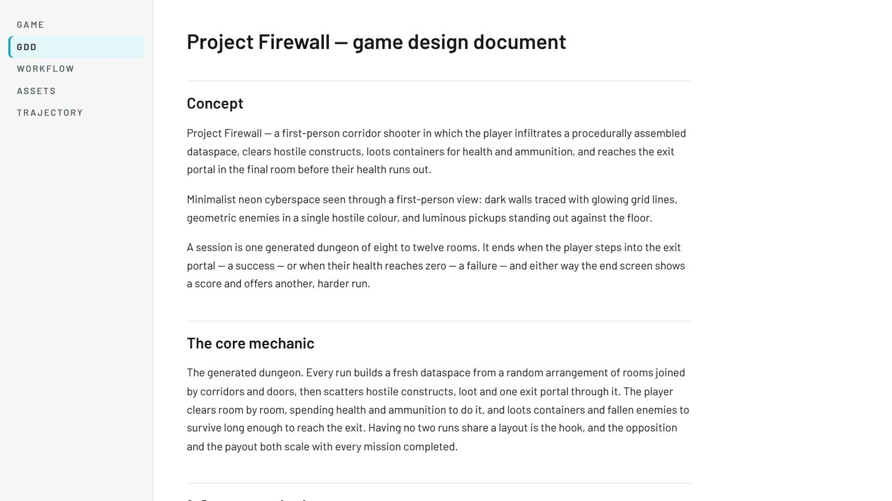
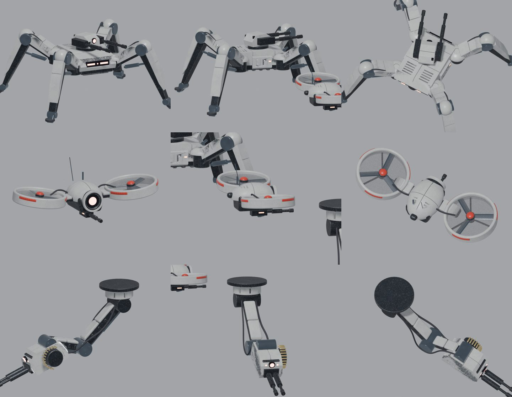
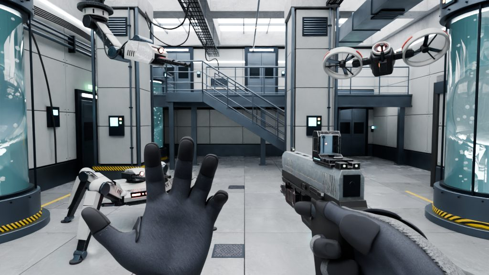

Workflow
This game is a sample: a vertical slice, not a complete game. It was built from the GDD the client shared with us. The same GDD had already been put through other tests: the game was first built in HTML only, then in Unity. This version recreates it with Blender and Godot.
Understand the GDD
Study the game design document until the game it describes is well understood.

Concept art
Create 2D concept art of the game with the help of AI.

Modelling in Blender
Feed the concept art to Claude, which models it in Blender; we review and adjust the models.

Rigging and animation in Blender
Rig and animate the models in Blender.

Building the game in Godot
Once every asset is modelled and animated, bring everything into Godot to build the final game, then test its gameplay and physics.